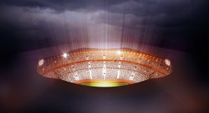
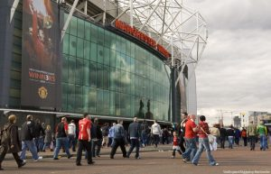

حوار خاص مع سيد فاروق نائب رئيس قسم التكنولوجيا بنادي مانشستر يونايتد.
كلمة السر فى الحاضر والمستقبل هى التكنولوجيا. والرياضة فى العالم ليست لعبة الهدف منها التسلية وإنما منظومة علم وعمل متكاملة . و الدورى الإنجليزى “البريميرليج” هو خير مثال على ذلك حيث يعتبر الدورى الأقوى والأكثر انتشارًا على الصعيد العالمى.
نشرت هيئة الإذاعة البريطانية “بى بى سى” تقرير تم نشره فى 12 يوليو 2017، وتم الكشف فيه عن أن “البريميرليج” حقق زيادة فى الإيردات بواقع 9% لتبلغ 3.6 مليار جنيه إسترلينى فى موسم 2015-2016 .
3.6 مليار جنيه إسترلينى فى موسم واحد !! نعم وقد تزيد عن ذلك أيضاً فالمتعارف عليه هو ان عوائد الأندية الكبرى حول العالم تصل إلى أرقام تقدر بالمليارات من الارباح .
لذلك سنستعرض من خلال هذا الحوار الخاض مع أحد المسئولين عن هذه الصناعة وهو بتاع تكنولوجيًّا. كما أحب هو أن يصف نفسة -وحوار متميز وحصرياً مع المهندس سيد فاروق المستشار التقني لأندية الدورى الإنجليزى “البريميرليج” -و نائب رئيس قسم التكنولوجيا بنادي مانشستر يونايتد(سابقاً).
أهلا بك مهندس سيد فاروق .وفخور بك لانك مثالاً يحتذى به فى مجال التكنولوجيا العالمية. ويسعدنى إجراء هذا الحوار معك وأسالك أولاً ما هو فريقك المفضل ؟
شكراً جزيلاً حميدة علي اجراء الحوار .. فريقي المفضل هو فريق آرسنال
– اين ولدت ؟
ولدت في مصر، محافظة الجيزة.
لماذا تكنولوجيا الملاعب هو تخصصك ؟
انا مهندس حاسبات لم اخطط للموضوع ده … وقد اتيحت لي الفرصة في للعمل مع شركات تخصصها إدارة الأحداث الرياضية الكبري مثل كأس العالم و الأولمبياد و من هنا أصبحت تكنولوجيا الملاعب تخصصي.
عفواً ولكن أريدك ان تشرح لنا ما هو مفهوم تكنولوجيا الملاعب ؟
شوف يا سيدي … ال IT في أندية أوروبا بتلعب دور محوري لان الأندية هنا عبارة عن Business و
كورة مع بعض. بمعني … كل نادي له موقع النادي الرسمي و موقع تسوق إلكتروني و مجلة و قناة
تليفزيون و استوديوهات. ده غير طبعاً ال Business العادي .. يعني HR, finance, CRM, social
media.
و كمان ticketing و أنظمة دخول الاستاد لان كل مشجع معروف اسمه ايه ساكن فين رقم
تليفونه و رقم الكرسي بتاعه في الاستاد. ده غير أنظمة الاستاد نفسه. الانارة و البوابات و
أماكن بيع المشروبات و المطاعم. و عندنا كمان أنظمة الجراجات اللي حولين الاستاد و كاميرات
المراقبة و حجرات التحكم و أنظمة الإعلانات اللي بتشوفها في الملعب. ده غير الصحفيين و
المصورين. مثلاً يعني الإعلانات دي في ظهرها أماكن الشبكات للمصورين. يعني الصحفي ياخد
الصورة تلاقيها علي أنظمة المجلة او الموقع اللي شغال فيه في خلال ثواني.
ده كمان غير
أنظمة الرياضة و الجيم. يعني كل لاعب معروف قياساته و مستوي الاستعداد البدني بتاعه كل يوم.
ده غير أنظمة الكشافين حولين العالم. و أنظمة الإحصاء للفرق الآخري. مثلاً يعني معروف محمد
صلاح عمل كام باص .. عمل كام ثرو .. عمل كام تسديدة في المرمي و كام خارج المرمي. قطع كام
كورة و رقص كام ترقيصة. جري كام كيلو و رجع يدافع كام مرة … عمل اسيست للمدافعين و أماكن
تحركه داخل الملعب. لعب كام دقيقة. سدد كام بنلتي و سددهم في اَي زاوية. و لو دي خيا هيحاول
يعمل إنقاذ علي بنلتي من محمد صلاح ايه هي الزاوية المفضلة لمحمد صلاح.
ده غير أنظمة
التدريب. في كل تدريب في إحصاءات بتتسلم للبوص و دي سرية للغاية و محدش يعرف فيها ايه غير
الناس اللي بتشتغل عليها و البوص …. ده كمان غير محلات النادي اللي بتبيع منتجات من الراعي
الرسمي (اديداس مثلاً) حولين العالم. و مخازن المنتجات و الأنظمة بتاعتها
ما هى اسباب دخولك هذا العالم ؟
العمل مع المؤسسات الدولية مثل فيفا و يويفا و اللجنة الأولمبية.
قرأت قبل الحوار عنك الكثير ووجدت أنك كنت مدير للكثير من المشروعات فهل تحدثنا عن بعضها ؟
شاركت في تنظيم قائمة البطولات دي من الناحية التقنية
بطولة كاس العالم عام ٢٠٠٦
المانيا
بطولة كاس الامم الاوروبية عام ٢٠٠٨ (سويسرا و النمسا)
اللجنة الاوليمبية
الدولية (بكين ٢٠٠٨) اوليمبياد بكين
بطولة ويمبلدون للتنس عام ٢٠٠٨, ٢٠٠٩, ٢٠١٠, ٢٠١١,
٢٠١٢ لندن
بطولة الألعاب الاسيوية عام ٢٠١٠ بالصين، بطولة الألعاب الاوليمبية الشتوية
كندا (فانكوفر ٢٠١٠)
بطولة كاس العالم لكرة القدم بجنوب افريقيا عام ٢٠١٠ (الاتحاد
الدولي لكرة القدم فيفا)
بطولة كاس الامم الاوروبية عام ٢٠١٢ (بولندا و أوكرانيا)
الاتحاد الاوروبي لكرة القدم
للجنة الاوليمبية الدولية (لندن ٢٠١٢) اوليمبياد
لندن
نائب رئيس قسم التكنولوجيا نادى مانشستر يونايتد منذ عام 2016 الي 2018.
رغم عدم متابعتى للكثير من المباريات الا انى عاشق منذ الصغر ل ديفيد بيكهام و كريستيانو رونالدو فمن هو لاعبك المفضل ؟
حازم امام لاعب الزمالك و المنتخب القومي السابق … في نظري اذا كان يمتلك القوة البدنية كان هيكون من احسن لاعبي العالم .علاقتي بالكرة في مصر انقطعت تماماً بعد ٢٠٠٣ و علي المستوي العالمي زيدان بلا شك.
كيف وصلت الى منصب نائب رئيس قسم التكنولوجيا بنادي مانشستر يونايتد ؟
انا لم اسعي للعمل مع يونايتد هم من عرضوا علي العمل معهم و كان شرطي ان أكون مدير عمليات التكنولوجيا و الرجل الثاني في قسم التكنولوجيا في النادي و ده يشمل اولدترافورد و الاكاديمية و الفريق الاول و جميع مكاتب يونايتد في لندن و نيويورك و هونج كونج
يريد المتابعين ان يعرفوا السر وراء عدم مشاركاتك فى اى مبادرات لدعم الرياضة فى العالم العربى عموماً والرياضة المصرية خاصة ؟
عرضت مساعدتي تكراراً ولم يستجب احد خصوصاً في موضوع عودة الجماهير بعد حادث بورسعيد و لكن لم يستجيبوا
بحسب إحصائيات “ديلويت فوتبول مونى ليج 2018“ هناك 5 أندية احتلت قمة العوائد المالية عن العام 2017. بالنسبة للأندية الخمسة وعوائدهم، وقد احتل مانشستر يونايتد الإنجليزى المركز الأول مسجلا 805.4 مليون دولار،كيف ترى دور التكنولوجيا فى صناعة الرياضة ؟
في مصر صفر للأسف لكن في أوروبا دورها كبير بالخصوص في النواحي العملية لان زي ما ذكرت الأندية في الخارج عبارة عن بيزنس
هل تعطينا نبذه عن محاولاتك الفاشلة خلال رحلتك للوصول الى ما تريد ؟
والله انا و الحمد لله لم افشل من قبل في عملي لكن طبعاً بيكون في أوقات صعبة زي اَي وظيفة
كيف ترى مستقبل تكنولوجيا الرياضة فى العالم ؟
هيكون لها دور اكبر و اكبر … كل شئ الان له جزء تكنولوجي خاص به
كيف يمكننا مواكبة التطور التكنولوجى فى مجال الرياضة ؟
ده موضوع كبير لكن بأختصار العملين في الرياضة و الأندية لازم يكون عندهم المستوي الثقافي و التعليمي المناسب لأستقبال التكنولوجيا الجديدة
هل ستوافق أم سترفض إذا اتيحت لك الفرصة لبناء مجتمع رياضى يعتمد على التكنولوجيا فى مصر ؟
هوافق بلا شك لكن طبعاً لازم تكون الظروف ملائمة.
ما هو كتابك المفضل ؟
ليالي قريش للكاتب مؤمن المحمدي
لماذا ترى ان التكنولوجيا ستتسبب فى مزيد من الارباح وهل لديك فعلاً خطة لذلك ام مجرد راى شخصى من متخصص ؟
الخطط موجودة و انا شايف ان الأندية في مصر لا تستغل كامل امكانياتها لتعظيم فرص الربح.
ما هى اول وظيفة لك وكم كان عمرك ؟
كنت مهندس شبكات و انا في الجيش كان عندي ٢٠ سنة
ما هى نصيحتك للشباب عموماً والرياضين خصوصاً ؟
لازم يكون عندكم طموح و غريزة النجاح
كيف يمكن للشباب دخول هذا المجال المتميز وهو تكنولوجيا الملاعب ؟
لازم تتوفر لهم أماكن لاستخدام التكنولوجيا أولاً وإلا لازم يكونوا خارج مصر للعمل في المجال
من الذي يلهمك؟
النجاح و كلمة شكراً.
وأخيراً أشكرك على اتاحة الفرصة لى لاجراء هذا الحوار وأسالك أخيراً ما هو لونك المفضل ؟
لونى المفضل هو اللون الازرق .. الشكر لك حميدة ونلتقى قريباً على خير.
اترك تعليق